AI Academy · Level 1 · Grade 6 · Week 9 · Student lesson
Algorithms as Recipes
Learn to understand, design, build, test and explain AI systems responsibly.
Project: Helpful Classroom Sorter
THE CONNECTED WEEK
Keep the current state visible.
Trace a score update, compare recipe order, diagnose a first error and run a fully specified paper robot.
Keep one habit: State the start → execute one instruction → record the new state.
Main lesson · Section 1
Which value does the next instruction use?
Trace current state, instruction order and the stopping point.
Start with two recipes
Two recipes use the same operations but produce different scores. Keep the starting state and every update so you can explain where their results begin to differ.
Retrieve the missing-feature limit
Two cards have the same recorded length but different widths and labels. Why can the length-only record fail to distinguish them?
Close your notes first. A rough first answer helps us choose the right starting point; it is not a score for your ability.
After trying, check the relevant lesson or ask your teacher. Change the part of your explanation that the evidence shows was wrong.
By the end, you can…
I can trace an ordered algorithm using the current value after every instruction.
I can explain how changing the initial state or instruction order can change the result.
I can locate the first incorrect update and distinguish copying a value from linking two variables.
Earlier wording, alternatives and picture transcripts
Your learning target
Remember before reading
Without opening the old lesson, explain one key idea from Features: Useful Clues. Give an example and a mistake that the idea helps you avoid.
Without opening the old lesson, explain one key idea from Sound Becomes a Signal. Give an example and a mistake that the idea helps you avoid.
Without opening the old lesson, explain one key idea from Sensors Are Messengers. Give an example and a mistake that the idea helps you avoid.
An algorithm is an ordered, testable procedure, with or without code.

LEARNING TARGET On numbered squares 0–5, start at 1 facing increasing numbers. Execute FORWARD 2, TURN, FORWARD 1, STOP. Define TURN as reversing direction. Trace position and direction after every instruction.
What if TURN were unspecified?
Learner name:
Readiness for the connected explanation
This week’s end goal
By the end, I can trace changing state and explain why instruction order matters.
Main lesson · Section 2
Track the current score, not just the start
Use an erasable number box and a separate trace of earlier states.
Read the complete score procedure
A classroom score display starts with the number 4. Its instructions are: add 3 to score; double score; subtract 2 from score; report score and stop. What number should it report?
Before doing the arithmetic, name the value being tracked and write its starting value. Here the variable is score and the initial state is score 4.
Apply updates in their stated order
An algorithm gives precise instructions for a task. In this chapter each instruction is carried out once, in the written order. An update replaces the current value. After adding 3, score is 7.
The next instruction therefore doubles 7, not the original 4. Keeping only the starting value in mind is a common source of errors.
Separate the variable from the trace
A variable name stays the same while its value may change. Think of score as the label on an erasable number box. Updating the box does not keep all earlier numbers inside it.
A separate trace preserves those earlier states so we can explain how the result was reached. This score procedure follows fixed arithmetic instructions; it does not learn from examples.
Predict the next update
Name the variable and initial value. After the first instruction, which number should the doubling instruction read? Explain why the variable’s name can stay unchanged while its value changes.
Earlier wording, alternatives and picture transcripts
PICTURE STORY
Look Closely Before You Explain
Pictures give clues; evidence tells us what the clues mean.

MYSTERY A paper robot cannot infer missing intentions; it needs ordered steps that another person can execute and test.
What do you notice?
Name three visible details without explaining them yet.
Circle the detail most connected to the system's decision.
Name one detail that may be decoration or distraction.
Make a first prediction and state the clue that supports it.
My observations, prediction, and evidence:
GOOD THINKING A prediction can change when stronger evidence appears.
A closer explanation
Main lesson · Section 3
Record the state after every instruction
An initial state plus a sequence of precise updates makes a run reproducible.
Use the latest value at each transition
Write the initial state first. For each instruction, read the latest value, perform the operation, and record the new state. A transition is the change from one recorded state to the next.
Follow the current score through three updates
Distinguish add from set
In words, double score means calculate twice its current value and store that result in score. Add 3 to score means increase the current value by 3. Set score to 3 means replace it with 3 instead.
These instructions sound similar but do different things: if score is 7, adding 3 produces 10, while setting it to 3 produces 3.
Compare runs from the same start
A trace is evidence of one execution from one initial state. To compare two procedures fairly, keep the initial state the same and list every intermediate value.
Then you can point to the first difference instead of only comparing the final numbers.
Explain a trace arrow
Point to the input, the deciding step and the result in this week’s visual. Explain the same step in ordinary words. A picture helps when you can say what each part represents.
Earlier wording, alternatives and picture transcripts
VISUAL MECHANISM
Input → Process → Output
Follow the information instead of imagining magic inside the machine.


INPUT goal, starting state, and available objects
PROCESS follow ordered unambiguous steps
OUTPUT completed task or a visible failure point
CORE IDEA An algorithm is an ordered, testable procedure, with or without code.
UNDER THE HOOD An algorithm is a finite procedure whose steps and control flow can be executed. Correctness depends on assumptions, preconditions, order, and termination.
Code is one representation of an algorithm, not the definition itself.
Draw a fresh example with all three stages:
A closer explanation
Connect the picture and the explanation
Main lesson · Section 4
Compare instructions and ordering clues
Ask what each instruction makes the actor do and what must already be true.
Pictures paired with their evidence

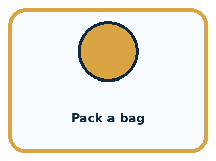
The case to investigate
CASE 1 — Pack a bag Clue: choose item, open bag, place item. Meaning: ordered task.

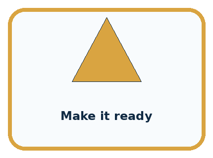
The case to investigate
CASE 2 — Make it ready Clue: meaning is unstated. Meaning: ambiguous instruction.

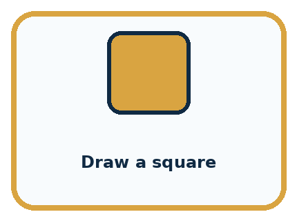
The case to investigate
CASE 3 — Draw a square Clue: four turns and moves. Meaning: testable procedure.

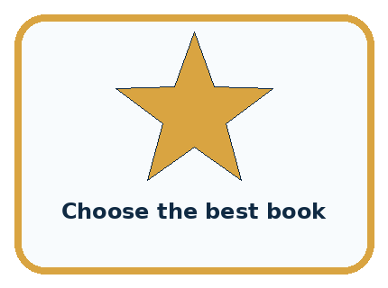
The case to investigate
CASE 4 — Choose the best book Clue: needs criteria. Meaning: goal without algorithm.
Discuss the confusing pair
Which two pictures are easiest to confuse? What evidence separates them?
Keep the limit in view
BOUNDARY A goal is not yet an algorithm; each step must tell the actor what to do.
Earlier wording, alternatives and picture transcripts
PICTURE GALLERY
Four Cases, Four Clues
Use the visual cue, then read the evidence carefully.
CASE 1 — Pack a bag Clue: choose item, open bag, place item. Meaning: ordered task.
CASE 2 — Make it ready Clue: meaning is unstated. Meaning: ambiguous instruction.
CASE 3 — Draw a square Clue: four turns and moves. Meaning: testable procedure.
CASE 4 — Choose the best book Clue: needs criteria. Meaning: goal without algorithm.
Change one thing in the pictured case
Change: Change the starting score to 0 for both recipes.
Prediction: A reports 3 and B reports 7.
Reason: A: 0→0→4→3. B: 0→4→8→7.
Main lesson · Section 6
Same operations. Different order.
Start both recipes at 3 and keep the intermediate states visible.
The two complete recipes
A fictional paper badge machine transforms an initial score using an ordered recipe.
Start score=3. Recipe A: double, add 4, subtract 1, report.
Recipe B swaps the first two operations but keeps the same starting score.
Follow both ordered traces

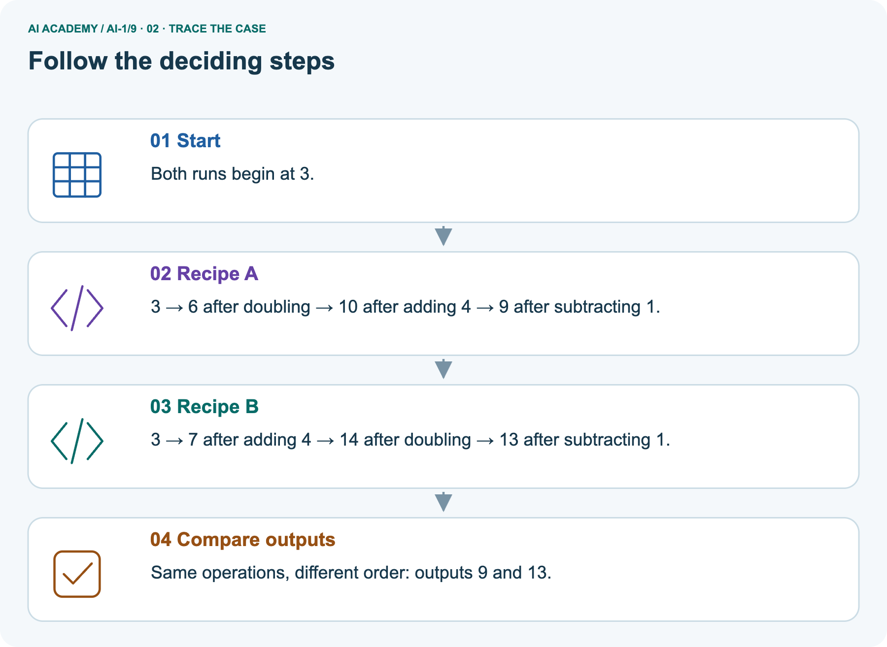

Compare intermediate values and outputs

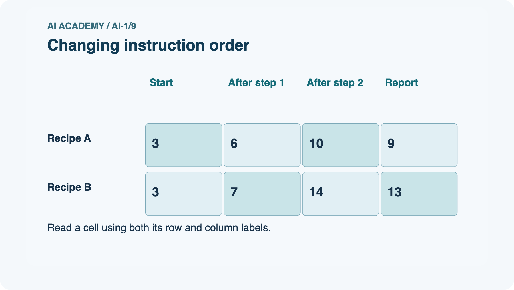

Explain the final difference
Every instruction reads the current score, not the original one unless explicitly told to. In B, doubling also doubles the added 4. In A, the extra 4 is added after doubling.
The final difference of 4 follows from that order, not from different starting data.
Predict from a new starting value
Before checking, start both recipes at 0. Keep each recipe’s instruction order fixed. Write the start and every update; mark the first transition where the two runs differ.
Check the zero-start traces

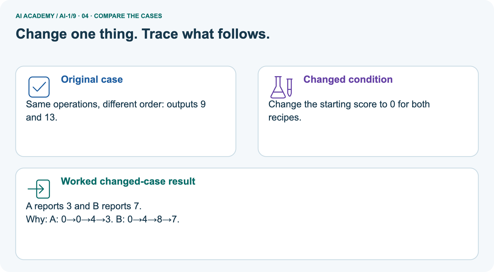

Limit what one run verifies
One traced input checks one run; it does not establish every recipe is equivalent or validate an entire program.
Locate the first changed state
Read the labelled picture: Use the arrows to explain where the two zero-start runs first differ.
Earlier wording, alternatives and picture transcripts
WORKED EXAMPLE
Watch the Reasoning, Not Just the Answer
Every step connects a claim to observable evidence.

CASE A paper robot cannot infer missing intentions; it needs ordered steps that another person can execute and test.
STEP 1 — OBSERVE goal, starting state, and available objects
STEP 2 — TRACE follow ordered unambiguous steps
STEP 3 — CONCLUDE completed task or a visible failure point
MODEL REASONING A strong algorithm states the starting arrangement, names each object, orders actions, and includes checks such as whether the bag is open.
The revision targets the failed assumption rather than replacing every step.
DO NOT OVERCLAIM A goal is not yet an algorithm; each step must tell the actor what to do.
What new evidence could change this answer?
A closer explanation
| Stage from score 4 | Add then double | Double then add |
|---|---|---|
| After first instruction | Add 3 gives 7 | Double gives 8 |
| After second instruction | Double gives 14 | Add 3 gives 11 |
| After subtracting 2 | Report 12 | Report 9 |
Both procedures use add 3, double and subtract 2, but the first two operations are exchanged. Doubling after the addition also doubles the extra 3. Adding afterward does not.
The final difference comes from the order, even though both procedures started at 4.
Now use two number boxes: A starts at 2 and B starts at 0. Copy the current value of A into B, then add 5 to A. After the copy, A is 2 and B is 2. After the addition, A is 7 and B remains 2.
Copying stores the value at that moment; it does not create a lasting connection between these number boxes. Record both values after each instruction, including the one that did not change.
Learn from the worked case
Cover the result before checking it. Say what is given, choose the procedure, and follow one step at a time. Then uncover the result and explain your first mismatch. Ask why a step is allowed, not only what number it produces.
A pictorial worked case: Algorithms as Recipes
The facts we will use

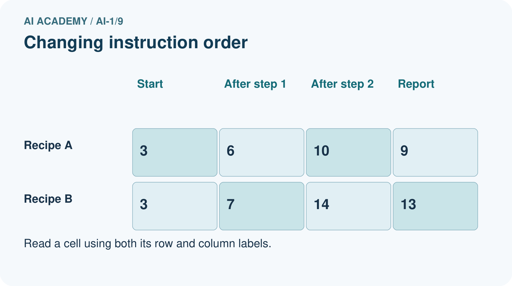


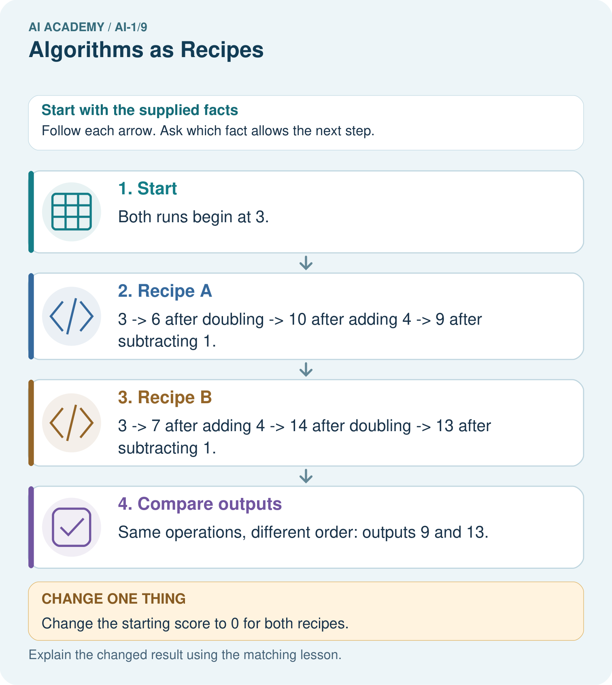

Read the picture one step at a time
Why this result follows
What this example does not establish
Change one thing: Change the starting score to 0 for both recipes. Predict the result before checking the explanation. What remains the same?
Main lesson · Section 7
Matching outputs can hide different procedures
A final answer alone does not show which steps were followed.
Compare equal outputs with different intermediate states
A final value does not reveal every step that produced it. Starting at 10, adding 2 then subtracting 2 reports 10. Adding 4 then subtracting 4 also reports 10. The intermediate states differ.
If a task requires a particular procedure, the final answer alone cannot establish that the required steps were followed.
Specify the initial state and stopping point
Before running an algorithm, state its initial values, the meaning and order of each instruction, and when to report and stop. Our short procedures stop after their listed steps.
A correct trace shows what those instructions do for the given start; it does not establish that the procedure solves every possible task or that a real-world display was measured correctly.
Repair and explain
CLAIM A People will know what I meant.
CLAIM B An algorithm must be written in a programming language.
STRONG ANSWER FRAME I claim ______ because the evidence shows ______. The process is ______. One limit is ______.
Earlier wording, alternatives and picture transcripts
COMPARE
Same Result, Different Reason
A comparison helps reveal the true concept boundary.
| Case | Evidence | What it shows |
|---|---|---|
| Pack a bag | choose item, open bag, place item | ordered task |
| Make it ready | meaning is unstated | ambiguous instruction |
| Draw a square | four turns and moves | testable procedure |
| Choose the best book | needs criteria | goal without algorithm |
Repair two tempting claims
Repair:
Repair:
A closer explanation
Main lesson · Section 8
Practise: repair the first incorrect update
Continue from the corrected current state rather than changing only the last answer.
Diagnose the trace 4,7,8,6
A learner traces the score procedure as 4, 7, 8, 6. The first update is correct: 4 plus 3 is 7. The first error is the next update: double should use the current 7 and produce 14, but the learner doubled the starting 4.
Correct that step and recompute the later subtraction, giving 12. Changing only the final answer would hide the faulty reasoning.
Write your new score trace
Compare starting states before blaming an instruction
If two traces disagree, compare the initial state before blaming an instruction. If the starting values match, compare the states in order and stop at the first difference.
Check the instruction used there, repair it if needed, and continue from the corrected state.
Use W2 to distinguish replacement and addition
Use workbook W2 for the connected example “Algorithms and changing state”. First fill the input and rule boxes. Try the middle steps before asking for a hint. After a hint, try the next step yourself.
| Plan | Do | Check |
|---|---|---|
| What is given? Which rule or procedure applies? | Record each intermediate step. | Does the result follow? What remains unknown? |
Explain your trace to a partner. Your partner points to one step to check. Swap roles on the next case. Each person writes their own explanation.
Challenge “every instruction uses the original value”
Use the worked case for Algorithms and changing state. Proposed explanation: “Every instruction uses the original number”. Decide whether this explanation is supported.
Point to the step or supplied fact that decides; explain your repair if needed.
Answer on your own before discussion. If you are unsure, say which step you need help with.
Explain the zero-start picture
Use the arrows to explain where the two zero-start runs first differ.
This is supported practice. Keep the separately named independent case for an attempt before feedback.
Earlier wording, alternatives and picture transcripts
GUIDED PRACTICE
Try It, Check It, Explain It
Use support now so you can succeed independently later.

Explain how the picture story demonstrates this idea: An algorithm is an ordered, testable procedure, with or without code.
Use a fresh example to explain algorithm.
Trace a new input → process → output example.
Find and repair the error in: An algorithm must be written in a programming language.
Invent one edge case and name the safe response.
PARTNER CHECK Point to the evidence. Do not accept an answer that only repeats the vocabulary word.
A closer explanation
Practise with less help: Distinguish replacement from addition
Check your reasoning
Explain the picture
Main lesson · Section 9
Investigate: give a paper robot executable directions
Use stated command meanings and initial conditions so a partner can reproduce or challenge the result.
Your initial state and command rules
Use a paper bag-state card and pencil/book tokens. Start with bag=CLOSED, contents=empty, and both tokens on the mat. OPEN changes CLOSED to OPEN. PUT(item) requires an open bag and that token on the mat, then moves it into the bag. CLOSE changes OPEN to CLOSED. REPORT lists the contents and stops. If a requirement fails, STOP and name the failed requirement; do not invent a successful move.
Predict, execute on paper and compare
Predict and trace OPEN, PUT(pencil), PUT(book), CLOSE, REPORT. Record the bag state, contents and remaining mat tokens after each instruction. Then reset to the same start and try PUT(book), OPEN, PUT(pencil), CLOSE, REPORT. Have a partner act exactly as written. Identify the first failure and rewrite the order before a fresh trace.
Keep a normal case and an edge case clearly separated.
Record what happened—even when it does not match your prediction.
Explain the result, one limitation, and the next useful test.
Keep the trace and first failure
| Case | Prediction | Observed result | What it means |
|---|---|---|---|
| Normal | |||
| Edge |
Before trying: what do I expect, and why? While trying: which step could first go wrong? Afterwards: what did I actually observe, and what should change? Keep “not run” if you only traced the procedure.
Earlier wording, alternatives and picture transcripts
EXPLORER LAB
Paper Robot Bag Pack
Predict first, test honestly, and explain what the evidence means.

State your prediction before the result is known.
Complete the task: Write directions for a paper robot to pack a bag.
INDEPENDENCE After support is removed, repeat the proof with a fresh case.
Plan → try → check
Main lesson · Section 14
Try alone: trace two changing number boxes
Track both X and Y after every instruction, including values that stay unchanged.
The new procedure and requested swap
For a new display, X starts at 4 and Y starts at 1. Copy the current X into Y; add 3 to X; double Y; report both and stop. Record X and Y initially and after each instruction. Explain why Y does not become 7 when X changes.
Then swap the first two instructions and trace the new procedure from the same initial state.
Keep one first attempt
Attempt this case before feedback. Record any help. Earlier examples below are further practice; a case already practised with feedback cannot establish fresh transfer.
Your teacher has the independent answer and scoring criteria. Complete the matching workbook week to keep your practice evidence together.
Use feedback afterwards
Attempt the independent case before hints. Record whether you worked alone, used a hint or followed a model. After feedback, fix the first unsupported step and explain why it changed.
A later check uses a changed case, not a copied answer.
Earlier wording, alternatives and picture transcripts
Independent case: Trace two changing number boxes
Week 9 Independent application
Close the worked explanation. Apply the idea to this different question without copying.
Instructions say pick up a pencil, write your name, then find paper. Find the first ordering problem and rewrite the three steps so another learner can follow them.
My answer, with a trace, calculation or supporting evidence
Create and test
Change one relevant detail. Predict the result before testing. Include a boundary or missing-information case when it helps reveal a limit.
My changed input and expected result
Connect to your project
Write the first executable sorting algorithm for one easy item before adding branches or AI.
The evidence I will keep
Transfer practice from the original programme
On numbered squares 0–5, start at 1 facing increasing numbers. Execute FORWARD 2, TURN, FORWARD 1, STOP. Define TURN as reversing direction. Trace position and direction after every instruction. What if TURN were unspecified?
Use feedback to improve
Main lesson · Section 11
Write your sorter’s first reproducible procedure
Show each state update before adding more branches or a learned model.
This week’s project decision
THIS WEEK'S CHECKPOINT Write the first executable sorting algorithm for one easy item before adding branches or AI.
Write the sorter’s steps in order, showing which values each step updates so a partner can reproduce the result.
Plan information, tests and review
What real classroom need does this serve?
What information is necessary—and what should stay private?
What happens inside the process?
What normal and edge cases will you test?
When should it say not sure or ask a person?
Keep a goal separate from executable steps
RESPONSIBLE DESIGN A goal is not yet an algorithm; each step must tell the actor what to do.
Earlier wording, alternatives and picture transcripts
PROJECT
Helpful Classroom Sorter
Build one coherent system across the year, one evidence-based decision at a time.


My project decision:
Evidence for your project
Main lesson · Section 16
Finish: explain why a transition follows
Close your notes and name the current value, operation and resulting state.
Your exit explanation
Close your notes. Explain this goal in your own words: Trace an ordered algorithm using the current value after every instruction
Choose support and revisit later
If you are unsure, return to the worked picture and explain one arrow. If you are ready, change an input or assumption and justify your prediction.
Save your workbook evidence. At the next review, try a different case before opening your old answer.
Reference bank and extra practice
Choose the reference that helps your next step.
Your quick word guide
Reference · Section 5
Your quick word guide
Use the words to explain a particular step, record or limit.
Core vocabulary
| Word | Meaning | My example |
|---|---|---|
| algorithm | ordered procedure for a task | |
| step | one executable action | |
| sequence | the order in which steps run | |
| assumption | condition taken for granted |
Terms for the connected explanation
| Word | Meaning |
|---|---|
| Variable | A named place for a value that can be updated |
| State | The current values being tracked at a particular point in a process |
| Initial state | The values before the first instruction is carried out |
| Trace | A record of the state as instructions are carried out in order |
Repair a claim using a word
CLAIM TO REPAIR People will know what I meant.
Use one vocabulary word and one piece of evidence to repair it:
Earlier wording, alternatives and picture transcripts
VOCABULARY
Words You Can See and Use
The badge is a memory cue; the definition does the real thinking work.


Misconception detective
WORD POWER A strong definition helps you decide something in a new case.
Words used in the closer explanation
Choose a stronger thinking challenge
Reference · Section 10
Choose a stronger thinking challenge
Choose the next useful challenge rather than treating the whole ladder as compulsory.
Pick your next step
RECALL Define algorithm.
EXPLAIN An algorithm is an ordered, testable procedure, with or without code.
TRACE Show the input, process, and output.
DIAGNOSE Repair: People will know what I meant.
TRANSFER Apply the idea to a new home or classroom case.
CREATE Design one revealing test.
DEFEND Give a claim, evidence, mechanism, limit, and safe action.
Earlier wording, alternatives and picture transcripts
PRACTICE LADDER
Climb from Recall to Defense
Each step asks for a stronger kind of understanding.

RETRY RULE A coached answer becomes mastery only after you solve a different case independently.
Reference: check your explanation
Reference · Section 12
Reference: check your explanation
Use after practice. Trace two changing number boxes is the selected independent case.
Check the evidence and its limit
□ Name or draw the fresh case.
□ Trace input, process, and output.
□ State the conclusion and strongest evidence.
□ Name one limit, failure, missing clue, or fairness/privacy concern.
□ Explain one safe next action or improvement.
Record support
My level: □ Not yet □ With one hint □ Independently □ I can teach it
Earlier wording, alternatives and picture transcripts
MASTERY
Checklist for explaining this week’s idea
Use after practice. Trace two changing number boxes is the selected independent case.

EXPLANATION CHECK State the initial values, update the current state in order, keep unchanged values visible and find the first differing transition.
Independent evidence:
SELF-CHECK A strong algorithm states the starting arrangement, names each object, orders actions, and includes checks such as whether the bag is open.
The revision targets the failed assumption rather than replacing every step.
NEXT BRIDGE Carry today's evidence habit into: If/Then Decisions.
Extra practice: Trace a robot's position
Reference · Section 13
Extra practice: Trace a robot's position
Try the question before opening its worked explanation.
Read the supplied case and question
A robot starts on the left of three squares, facing right. It executes MOVE, MOVE, STOP, each MOVE being one square.
Trace the position after each command.
Your explanation
Which detail supports the answer, and why does it matter?
Check after trying
Middle, rightmost, unchanged. Direction, distance and starting conditions must be specified.
| Evidence or stage | Value or result |
|---|---|
| Start | Left square |
| MOVE | Middle square |
| MOVE | Right square |
| STOP | Right square |
Earlier wording, alternatives and picture transcripts
Week 9 Worked case
Use the supplied details to practise the weekly concept before attempting the independent question. This case extends the illustrated lesson.
The situation
The question
Worked explanation
Explain it in your own words
Trace the supplied case visually
Trace a robot's position
A robot starts on the left of three squares, facing right. It executes MOVE, MOVE, STOP, each MOVE being one square.
Trace the position after each command.
Middle, rightmost, unchanged. Direction, distance and starting conditions must be specified.
Reference: original lesson checklist
Reference · Section 15
Reference: original lesson checklist
Use an additional checklist when it helps inspect your explanation.
Targets and evidence
| By the end, I can | How I will show it |
|---|---|
| Trace an ordered algorithm using the current value after every instruction | Explain the deciding step, show a trace or test, and state one limit. |
| Explain how changing the initial state or instruction order can change the result | Explain the deciding step, show a trace or test, and state one limit. |
| Locate the first incorrect update and distinguish copying a value from linking two variables | Explain the deciding step, show a trace or test, and state one limit. |
Keep your route and first prediction
Remember → watch and explain → try with help → investigate → try independently → keep project evidence. Your teacher may spread this lesson across several classes.
Keep your first prediction. Compare it with what the evidence shows and explain any change.
Earlier wording, alternatives and picture transcripts
Start with this question: A fictional paper badge machine transforms an initial score using an ordered recipe.
Extra practice: pictures, repair and feedback
Reference · Section 17
Extra practice: pictures, repair and feedback
Attempt each question before opening its explanation. Use one browser or paper copy.
First supported question
A fictional paper badge machine transforms an initial score using an ordered recipe.
Which labelled step matches this detail? Same operations, different order: outputs 9 and 13.
1. Recipe A
2. Compare outputs
3. Recipe B
4. Start
Hint if needed: Read the steps in the pictorial case. Match the supplied detail to the stage that performs or records it.
Practice 1: explain the deciding evidence
Check the first explanation
After your attempt, compare with the supported explanation: Compare outputs Same operations, different order: outputs 9 and 13. Every instruction reads the current score, not the original one unless explicitly told to.
In B, doubling also doubles the added 4. In A, the extra 4 is added after doubling. The final difference of 4 follows from that order, not from different starting data.
Changed-case question
Changed-case practice: Change the starting score to 0 for both recipes. Which conclusion is supported by the supplied facts?
1. A reports 3 and B reports 7.
2. This one example guarantees correct results for every future input.
3. We can decide the result without examining the changed input or the procedure.
Hint if needed: Use the changed condition and the deciding step in the pictorial trace. The answer must say what follows from those facts.
Practice 2: explain the deciding evidence
Check the changed case
After your attempt, compare with the supported explanation: A reports 3 and B reports 7. A: 0→0→4→3. B: 0→4→8→7.
Repair and save your work
Review Features: Useful Clues (ai-1/8). Goal: Choose recorded properties that preserve distinctions needed for a stated task.
Short practice: Point to the pair that tests pattern, then explain why the sticker is a bad early input.. Return to this week and explain what you changed.
Review Sound Becomes a Signal (ai-1/6). Goal: Interpret an ordered sequence of sound-signal samples with a stated time interval. Short practice: Does the all-zero retained record prove the full signal was silent?
Use the picture.. Return to this week and explain what you changed.
Review Sensors Are Messengers (ai-1/3). Goal: Describe a measurement using its quantity, value, unit and conditions. Short practice: Why can we calculate the earlier gap but not predict an exact new B reading?.
Return to this week and explain what you changed.
Use Download completed work in the hosted lesson to export your answers, reflections, practice feedback and code-run evidence. Open the HTML copy to read or print it.
Drafts stay in this browser when storage is available; clear drafts on a shared device.
Earlier wording, alternatives and picture transcripts
Use this supported practice once, in the browser or on paper. Keep the reserved independent assessment for a separate first attempt before teacher feedback.
Repair a missing building block
Keep your completed work
Reference: the six-picture journey
Reference · Section 18
Reference: the six-picture journey
Revisit the picture that serves the current question; key diagrams already sit beside the main explanation.
01. Algorithms as Recipes: the case

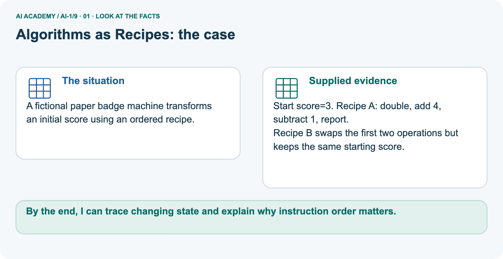

A fictional paper badge machine transforms an initial score using an ordered recipe. Supplied facts: Start score=3. Recipe A: double, add 4, subtract 1, report.
Recipe B swaps the first two operations but keeps the same starting score.
Point to the given fact that matters most. Explain why it matters.
02. Follow the deciding steps
Start: Both runs begin at 3. → Recipe A: 3 → 6 after doubling → 10 after adding 4 → 9 after subtracting 1. → Recipe B: 3 → 7 after adding 4 → 14 after doubling → 13 after subtracting 1. → Compare outputs: Same operations, different order: outputs 9 and 13.
Point to each numbered stage and explain which recorded input it uses.
03. Changing instruction order
Changing instruction order. Recipe A: Start = 3, After step 1 = 6, After step 2 = 10, Report = 9. Recipe B: Start = 3, After step 1 = 7, After step 2 = 14, Report = 13.
Read the labels and values. Explain the relationship the model shows.
04. Change one thing. Trace what follows.
Original case: Same operations, different order: outputs 9 and 13. Changed condition: Change the starting score to 0 for both recipes. Expected result: A reports 3 and B reports 7. Reason: A: 0→0→4→3. B: 0→4→8→7.
Predict before checking the worked changed-case result. Name what changed and what the supplied facts allow you to conclude.
05. Connect the explanation to its limit

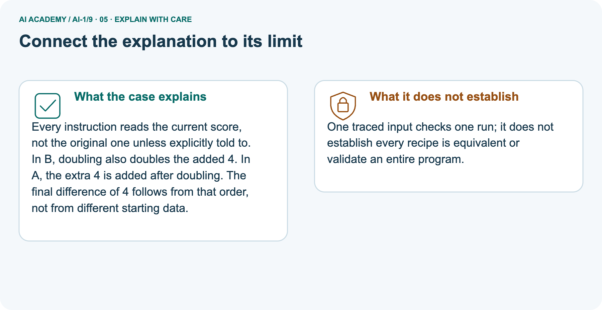

Every instruction reads the current score, not the original one unless explicitly told to. In B, doubling also doubles the added 4. In A, the extra 4 is added after doubling.
The final difference of 4 follows from that order, not from different starting data. Limit: One traced input checks one run; it does not establish every recipe is equivalent or validate an entire program.
Explain the case, then point to a limit on the claim.
06. Make the idea visible in your project

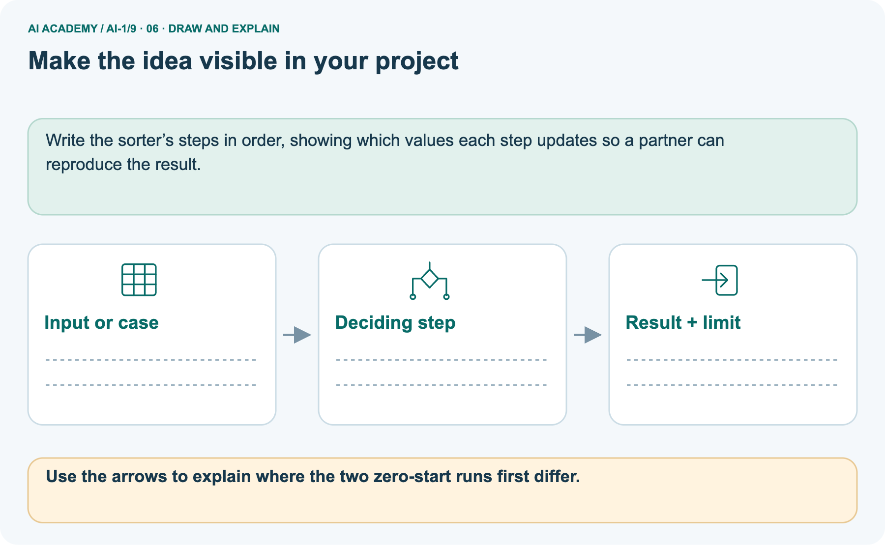

Write the sorter’s steps in order, showing which values each step updates so a partner can reproduce the result. Draw your input, deciding step, result and limit.
Supported question: Use the arrows to explain where the two zero-start runs first differ.
Draw your project trace and justify the deciding step using evidence.